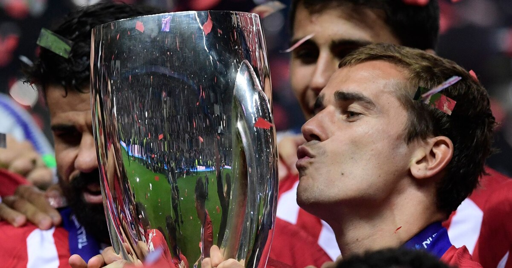
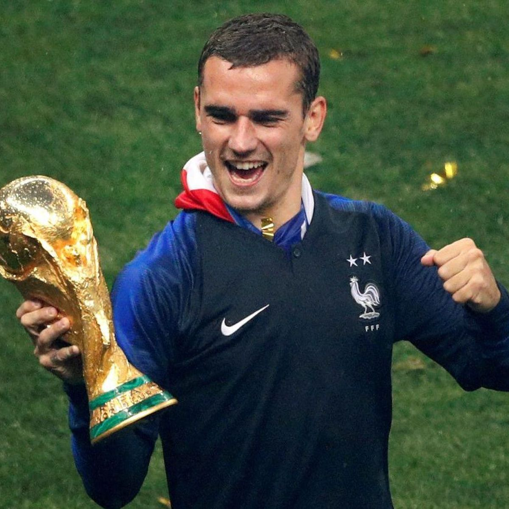

Fan Site - Palmares Antoine Griezmann
- 2010 – Champion d’Europe (moins de 19 ans) : équipe de France jeunes
- 2014 – Vainqueur de la Super Coupe d’Espagne : Atlético Madrid
- 2015/2016 – Finaliste de la Ligue des Champions : Atlético Madrid
- 2015/2016 – Meilleur joueur du Championnat d’Espagne de la saison
- 2016 – Médaillé d’argent du Championnat d’Europe : Equipe de France
- 2016 – Meilleur buteur du Championnat d’Europe
- 2016 – Meilleur joueur du Championnat d’Europe
- 2016 – Membre de l’équipe symbolique du Championnat d’Europe 2016 selon l’UEFA
- 2016 – Footballeur de l’année en France
- 2018 – Ordre de la Légion d’Honneur
- 2018 — Champion du monde
- 2020/21 – Vainqueur de la Coupe d’Espagne
- 2022 – Médaillé d’argent aux Championnats du Monde : Equipe de France
Retour Au Menu